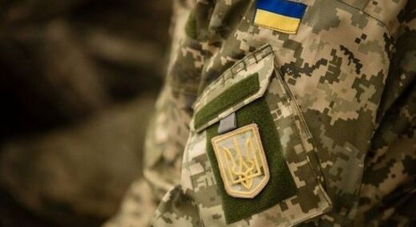
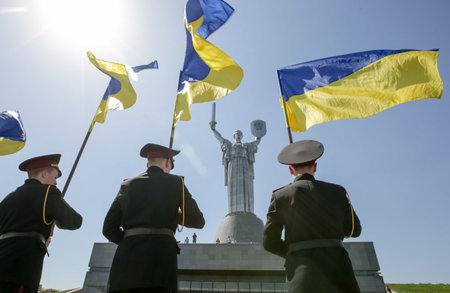

Ukrainian Air Force
The Ukrainian Air Force is a part of the Armed Forces of Ukraine. The Ukrainian Air Force headquarters is located in the city of Vinnytsia. When the Soviet Union dissolved in 1991, many aircraft were left on Ukrainian territory. Ever since, the Ukrainian Air Force has been downsizing and upgrading its forces. The main inventory of the air force still consists of Soviet-made aircraft. Currently 36,300 personnel and 144 aircraft are in service in the Ukrainian Air Force and Air Defense forces.
History
As of 1992, the Ukrainian Armed Forces were completely inherited from the Soviet Union, in which Ukraine had been a member state (a union republic). Like other Soviet republics, it did not possess its own separate military command, as all military formations were uniformly subordinated to the central command of the Armed Forces of the USSR. Administratively, the Ukrainian SSR was divided into three Soviet military districts (the Carpathian Military District, Kyiv Military District, and Odesa Military District). Three Soviet air commands and most of the Black Sea Fleet naval bases were located on the coast of Ukraine.
When the collapse of the Soviet Union took place in 1991 (see Novo-Ogaryovo process), the newly independent state of Ukraine inherited one of the most powerful force groupings in Europe. According to an associate of the Conflict Studies Research Centre, James Sherr: "This grouping, its inventory of equipment and its officer corps was designed for one purpose: to wage combined arms, coalition, offensive (and nuclear) warfare against NATO on an external front".[18] At that time, the former Soviet armed forces in the Ukrainian SSR included a rocket army (43rd Rocket Army), four air-force armies, an air-defense army (8th Air Defence Army), three regular armies, two tank armies, the 32nd Army Corps, and the Black Sea Fleet.[19] Altogether the Armed Forces of Ukraine included about 780,000 personnel, 6,500 tanks, about 7,000 combat armored vehicles, 1,500 combat aircraft, and more than 350 ships. Along with their equipment and personnel, Ukraine's armed forces inherited the battle honors and lineage of the Soviet forces stationed in Ukraine. However, due to the deterioration of Russian-Ukrainian relations and to the continued stigma of being associated with the Soviet Union, in 2015 the President of Ukraine ordered the removal of most of the citations awarded to the Ukrainian units during the Soviet era.
On 26 February 1991, a parliamentary Standing Commission for Questions of Security and Defense was established. On August 24, 1991, the Ukrainian parliament (the Verkhovna Rada), in adopting the Declaration of Independence of Ukraine, also enacted a short resolution "About military formations in Ukraine". This took jurisdiction over all formations of the armed forces of the Soviet Union stationed on Ukrainian soil and established one of the key agencies, the Ukrainian Ministry of Defense. On 3 September 1991, the Ministry of Defence commenced its duties. On 22 October 1991 units and formations of the Soviet Armed Forces on Ukrainian soil were nationalized.Subsequently, the Supreme Council of Ukraine adopted two Laws of Ukraine on December 6, 1991, and Presidential Ukase #4 "About Armed Forces of Ukraine" on December 12, 1991. The government of Ukraine surrendered any rights of succession to the Soviet Strategic Deterrence Forces (see Strategic Missile Troops) that were staged on the territory of Ukraine. Recognizing the complications of a smooth transition and seeking a consensus with other former members of the Soviet Union in dividing up their Soviet military inheritance, Ukraine joined ongoing talks that started in December 1991 regarding a joint military command of the Commonwealth of Independent States.
Inherent in the process of creating a domestic military were political decisions by the Ukrainian leadership regarding the country's non-nuclear and international status. Among these were the definition, agreement, and ratification of the 1990 Treaty on Conventional Armed Forces in Europe (CFE) which not only established the maximum level of armament for each republic of the former USSR, but also a special ceiling for the so-called CFE "Flank Region". Included in this region were Ukraine's Mykolaiv, Kherson and Zaporizhzhia Oblasts, and the Autonomous Republic of Crimea. Another key event in the development of the Ukrainian military was the 1992 Tashkent Treaty, which laid out aspirations for a Commonwealth of Independent States military. This collective military proved impossible to develop because the former republics of the USSR all wished to go their own way, ripping the intricate Soviet military machine into pieces. Ukraine had observer status with the Non-Aligned Movement of nation-states from 1996. However, due to the 2014 Russian aggression against Ukraine, the Verkhovna Rada repealed this status on 23 December 2014.
Following the breakup of the Soviet Union, Ukraine inherited two divisions of the Strategic Rocket Forces' 43rd Rocket Army (HQ Vinnytsia): the 19th Rocket Division (Khmelnytskyi) (90 UR-100N/SS-19/RS-18) and the 46th Rocket Division at Pervomaisk, Mykolaiv Oblast, equipped with 40 SS-19 and 46 silo-mounted RT-23 Molodets/SS-24s. While Ukraine had physical control of these systems, it did not have operational control. The use of the weapons was dependent on Russian-controlled electronic Permissive Action Links and the Russian command and control system. A SS-20 on display at the World War II Museum in Kyiv Ukraine voluntarily gave up these and all other nuclear weapons during the early 1990s. This was the first time in history that a country voluntarily gave up the use of strategic nuclear weapons, although South Africa was dismantling its small tactical nuclear weapons program at about the same time. Ukraine has plentiful amounts of highly enriched uranium, which the United States wanted to buy from the Kharkiv Institute of Physics and Technology. Ukraine also has two uranium mining and processing factories, a heavy water plant and technology for determining the isotopic composition of fissionable materials. Ukraine has deposits of uranium that are among the world's richest. In May 1992, Ukraine signed the Strategic Arms Reduction Treaty (START I) in which the country agreed to give up all nuclear weapons and to join the Nuclear Non-Proliferation Treaty as a non-nuclear weapon state. Ukraine ratified the treaty in 1994, and as of January 1, 1996, no military nuclear equipment or materials remain on Ukrainian territory. On 13 May 1994, the United States and Ukraine signed a Memorandum of Understanding on the Transfer of Missile Equipment and Technology. This agreement committed Ukraine to the Missile Technology Control Regime (MTCR) by controlling exports of missile-related equipment and technology according to the MTCR Guidelines. Other disarmament – strategic planes & other missiles Ukraine and NATO estimate that 2.5 million tons of conventional ammunition were left in Ukraine as the Soviet military withdrew, as well as more than 7 million rifles, pistols, mortars, and machine guns. The surplus weapons and ammunition were stored in over 180 military bases, including in bunkers, salt mines and in the open.[35] As of 2014, much of this surplus had not been scrapped.